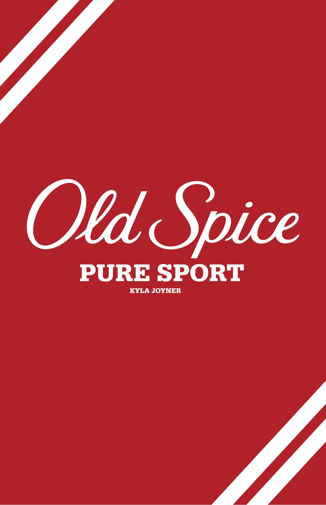
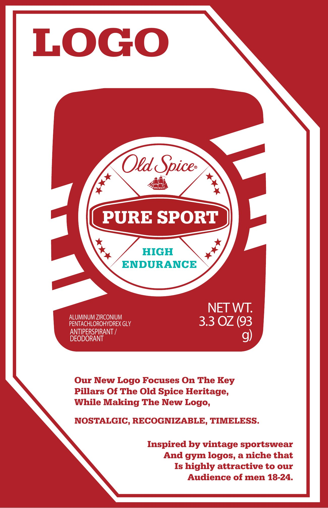
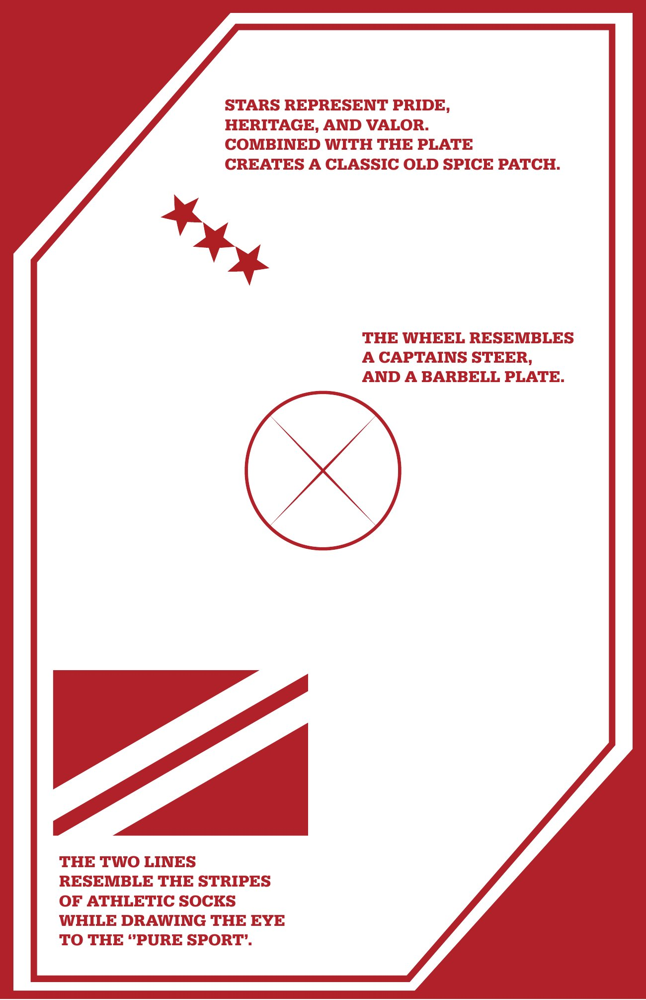
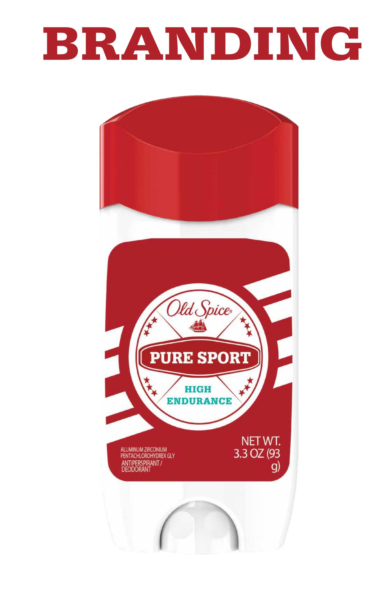
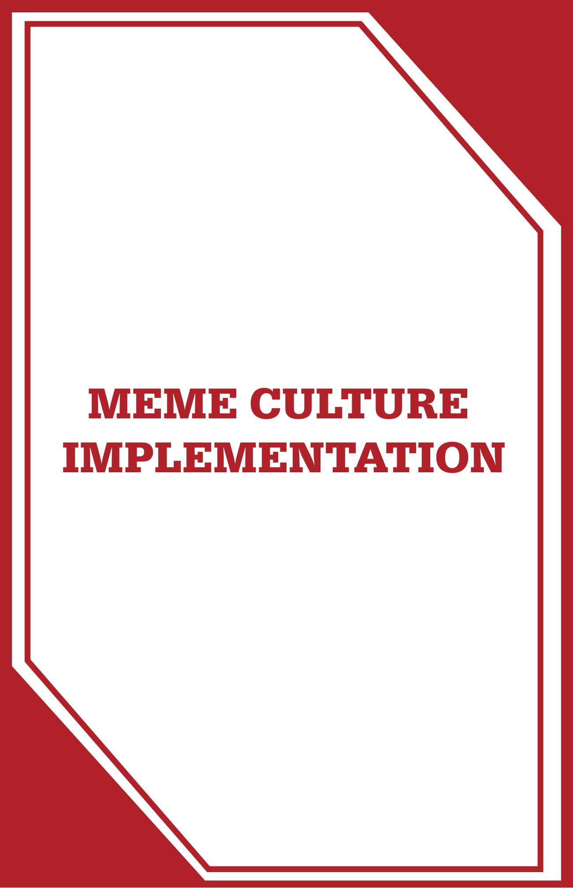
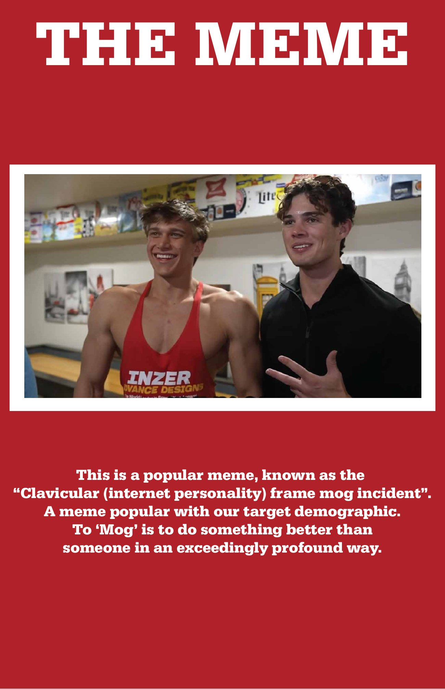
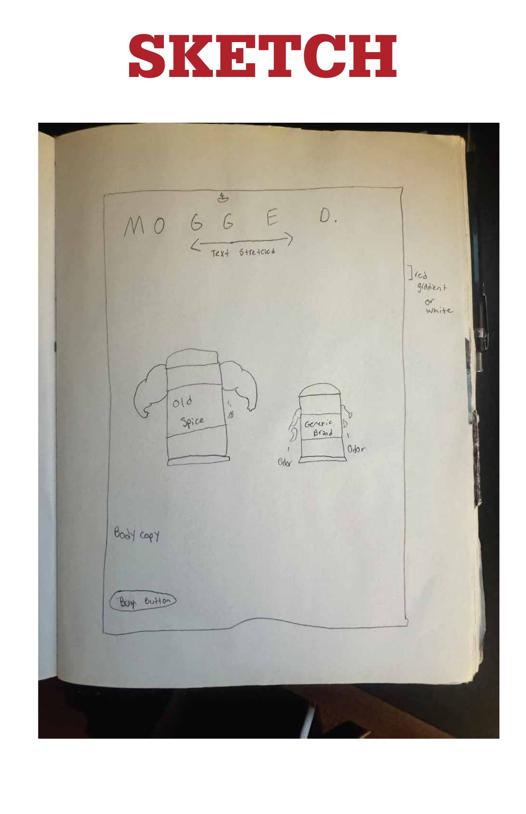
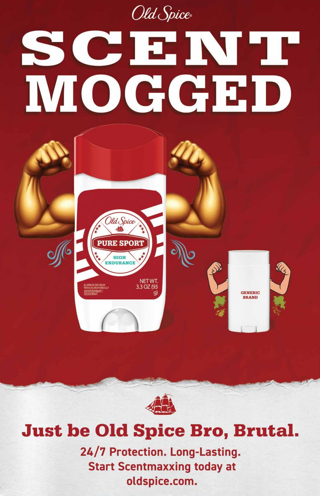

- Project:
- Unofficially reworking and reimagining official Old Spice branding and assets as well as receiving feedback from company leaders. The goal was to target a younger male audience, while still maintaining brand authenticity and noticeability.
- Role:
- Designer







